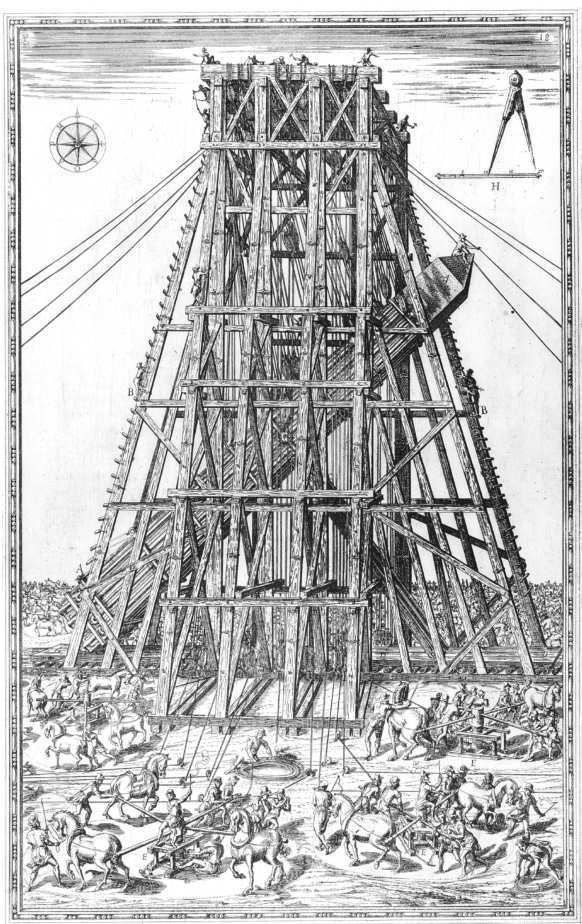
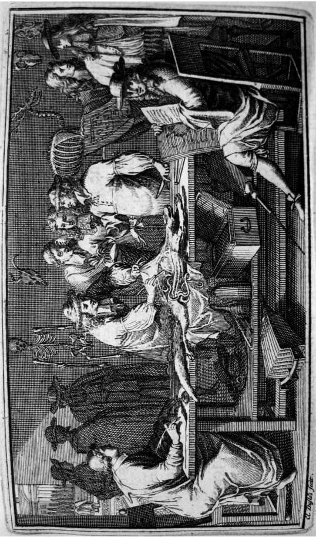

科学不只是关于自然界的研究和知识积累。从中世纪晚期至今，科学知识被越来越多地用于改变这个世界，赋予人类更大的能力控制世界，并且创造出新的世界让我们居住，我们似乎与自然界渐趋疏离。现如今，人类日益被技术创造的人工世界所包围。只有当技术出问题时，我们才发现自己是多么依赖技术，此时我们就像中世纪的农民面对久旱无雨一样感到无助。因此，当自然界通过侵扰这个人工世界来重新彰显自己的力量，比如陨石或太阳耀斑干扰卫星通信、雷击切断电能，或者火山爆发使飞机停运时，现代人往往会惊恐万状。在过去几个世纪里，技术扩张最彻底地改变了人类的日常世界。与此同时，技术的发展也依赖并且促进科学上的探索。16、17世纪发生了一次特殊的转向，即用科学研究和科学知识来解决当时的问题，满足当时的需求。
人工世界
在文艺复兴时期的意大利，新的宏伟工程改变了自然和城市的面貌。运河和供水系统占用了新的土地，提供了饮用水和运输路线。菲利波·布鲁内莱斯基（1377—1446）用新的建筑技术为大教堂建造了一座巨大的双层圆顶，重塑了佛罗伦萨的天际轮廓。新的城市设计体现了人文主义者对公民生活、对执政君主智慧与权力的强调，新的防御工事则用来保护他们的利益。通常情况下，一项新技术会推动其他技术的发展。军事技术在15世纪发生了转变，火药的使用日益增多，轻便的青铜大炮也被制造出来，这一切都使中世纪的防御工事变得过时——其屹立的城垛正是火炮的极好目标。因此，必须发展一种新的防御系统。新的防御设计利用了几何原理，成为贵族教育的必修内容。先是在16世纪的意大利，然后在其他地方，迫切的实际问题（以及君主的野心）造就了一个由博学的工程师和建筑师所组成的群体，他们以古代的阿基米德和维特鲁威为榜样，愈发倾向于运用数学原理和分析来解决实际问题。这一新兴群体既非只重手工经验积累的工匠，亦非远离实际事务的学者，而是介于他们之间。科学革命的一个基本特征是越来越多地利用数学来研究世界，恰恰是这批人为此提供了关键的背景。达·芬奇（1452—1519）和16世纪中叶的军事工程师塔尔塔利亚都是这一“中间”群体的早期例子。到了16世纪末，伽利略从这些博学的工程师那里汲取了灵感，借鉴了方法。
改建罗马城的灵感来自于实用性和效仿古人的人文主义渴望。教皇资助研究和重建了古老的水道和排水系统。建于公元4世纪的旧圣彼得大教堂被推倒重建，宏伟的新圣彼得大教堂矗立至今。此举激励了16世纪的一项宏伟的工程——移动梵蒂冈的方尖碑。这是罗马人在公元1世纪竖立的一块六层楼高的巨石，重逾360吨。1585年，由于方尖碑妨碍了新的圣彼得大教堂的建设，教皇西克斯图斯五世悬赏征集方案，将这块古埃及巨石移到新的位置。这是方尖碑在1500年里第一次移位。最后，工程师多梅尼科·丰塔纳（1543—1607）竞标成功。1586年4月30日，利用75匹马、900个人、40台卷扬机、5个50英尺长的杠杆和8英里的绳索，丰塔纳成功地将这块装在铁架内的巨石抬离了基座。教皇对这项工程异常重视，甚至不惜将新落成的一部分圣彼得大教堂拆除，以使杠杆和卷扬机最好地发挥作用。接着，丰塔纳将方尖碑放低置于一个移动托架之上（图16），沿堤道运走，将其重新竖立于今天的所在地——圣彼得广场中心。

图16 移动梵蒂冈的方尖碑，出自多梅尼科·丰塔纳同名作品（罗马，1590）。
文艺复兴时期的成就及其背后的经济和军事动力都需要原料。因此，1460至1550年见证了采矿业的繁荣，特别是在矿产资源最为丰富的中欧地区。中世纪的采矿主要是开采地表矿藏等小规模活动。但近代早期欧洲的需求——武器和火炮需要铁和铜，造币需要白银和黄金——催生了更有条理、更大规模的采矿以及更好的冶炼、精炼技术。更深的竖井和更大的规模除了要求组织更多的劳力外，还要求更多的机械化——用水车驱动风箱和破岩设备，用泵为矿井排水和通风。德国人文主义者和教育家乔治·阿格里科拉（1494—1555）也许是最有名的记述采矿的作者，他希望对采矿知识进行整理和改进。为使这项原本肮脏的行业受到敬重，他撰写了富含插图的拉丁文巨著《论金属》，把德国采矿活动与古典文献联系起来，并且为冶金学创造了一套拉丁文词汇。阿格里科拉的插图中偶尔出现的伐木、烟尘和废水横流等场景，预言了此种技术持续发展将会伴随着何等惨痛的环境代价。对实际从业者更有用的也许是采矿业的监督人埃尔克（约1530—1594）的德语著作。他的著作论述了如何实际处理矿石、测定金属，制备酸类和盐类化学产品，包括火药的最重要成分硝石。采矿业到16世纪中叶便衰落了，既是因为欧洲矿藏的枯竭，也是因为来自新世界的金属压低了金属价格，使欧洲采矿业已不那么有利可图。
对新世界的期待促进了制图学和航海的发展。中世纪晚期的航海图，或称波尔托兰海图，只标明了海岸线，一些特定的点覆盖着玫瑰花形的罗盘航向。这些图可用于地中海地区或沿海岸线的相对较短的航行，但不具备地理投影效果，也不能用于越洋航行。托勒密写于公元2世纪的《地理学》在15世纪被重新发现，它用东西线和南北线（分别为经度和纬度）所组成的网格来绘制地图。15世纪末的地图——如瓦尔德泽米勒的地图——采用了这种方法，图中弯曲的纬度线和经度线向两极会聚。佛兰德斯制图师墨卡托（1512—1594）普及了如今广为人知的墨卡托投影法，其中经线相互平行，并与垂直的纬线相交成直角。虽然它扭曲了高纬度地区的大陆块，但这种把球形地球投影到平面地图上的方法更便于导航（至少在低纬度地区），因此深受西班牙宇宙志学者和航海家的青睐。
罗盘和象限仪——分别用来确定航向和纬度——自中世纪以来就被用于航海，但确定经度的可靠方法尚付阙如。当船在欧洲水域或陆地视线范围内航行时，这尚不构成严重的问题。但如果没有准确的经度测量，越洋航行将非常危险。由于定位同时需要纬度和经度，对于制图员和航海家来说，缺少经度是十分严重的问题，找到测定经度的方法已经成为这一时期最迫切的技术问题。西班牙、荷兰、法国和英格兰等相互竞争的航海国家都高额悬赏，征集测定经度的可靠方法。
测时是测定经度的关键。两个地方的本地时间每相差一小时，经度就相差15度（因此一个现代“时区”大约宽15度）。然而，如何同时知道两个遥远地点的时间呢？可以带着在船的始发地设定的时钟，将其读数与由观测太阳或星星的位置所确定的船所在地的时间相比较。不幸的是，近代早期时钟的误差有每天20分钟之多。伽利略观察到，不论振幅多大，摆的节奏是恒定的，这暗示了一种新的计时调节器。他在软禁期间开始设计一种由摆调节的时钟，但从未制造出来。1656年，荷兰的克里斯蒂安·惠更斯制造出了第一个可使用的摆钟，使可靠性大幅提升，至少对于陆地上的时钟是如此。在颠簸的船上，摆钟无法精确运行。此后，惠更斯和胡克各自独立试验了以弹簧为动力的时钟，但事实证明，它们在船上走得也不够精确。不过，胡克在研究弹簧的过程中提出了弹簧的拉伸与受力之间的关系，即今天所谓的“胡克定律”，惠更斯的工作也使简谐运动定律得到了改进。（经度问题本身直到18世纪才得到解决：英格兰仪器制造者约翰·哈里森设计出一种新的精密计时器，使时钟即使在海上也能精确运行。）
除了人造时钟还有天体钟，即某个天文事件，它在参照位置的发生时间可以计算出来，然后与该事件在观察者所在位置发生时的本地时间相比较。16世纪的西班牙宇宙志学者通过对月食的坐标观测，成功地测定了西班牙帝国殖民地的经度，但月食对于航海来说太过罕见。然而，木星四颗卫星的食发生得更为频繁，最里面的卫星木卫一每42小时就发生一次食，伽利略建议把它们用作计时器。天文学家吉安·多梅尼科·卡西尼（1625—1712）最充分地探索了这种想法，于17世纪60年代编制了这些食的时间表。然而，虽然这个系统在陆地上管用（它曾被成功地用于修正陆地地图），但事实再次证明，在移动的船上用望远镜观测食是不现实的。不过在检验这种想法的过程中，观测者们注意到，一些食的发生时间要比预计的晚几分钟。丹麦自然哲学家奥勒·罗默（1644—1710）注意到，当木星距离地球最远时，这一误差达到最大，遂于1676年提出光速是有限的（食的表观延迟缘于光在空间中的传播时间），从而使粗略测量光速成为可能。
这寥寥几个例子表明，技术应用与科学发现有着千丝万缕的联系，两者相互驱动和促进。“纯粹”科学与“应用”科学的对立并不适用于17世纪。如果贬低实际需要——无论是军事、经济、工业、医疗还是社会政治方面的需要——对于促进科学革命发展的重要性，将会与真实的历史情形背道而驰。
一提到科学发现与实际应用的关联，人们往往会想到弗朗西斯·培根爵士（1561—1626）。培根出生于一个社会地位很高的家庭，受过律师教育，曾任国会议员，被授予维鲁拉姆勋爵爵位，最终担任了英国上议院的大法官（因涉嫌受贿被罢免），其一生中的大多数时间都居住在权力的宫殿之中。因此，关于权力的话题和帝国的建筑一直在他的思考范围中。他主张自然哲学知识应当为人所用 ，因为它能够为人类和国家增添福祉。培根将当时的自然哲学刻画为——或讽刺为——毫无价值，它的方法和目标被误导，从事自然哲学的人终日陷入语词之争，对于具体工作却视而不见。事实上，虽然培根对自然魔法的形而上学基础表示了怀疑，但他称赞了魔法，因为魔法“主张要把自然哲学从各种思辨召回到重要的具体工作”。自然哲学应当具备操作性 而非思辨性——应当做事情，制造东西，赋予人类以力量。他认为，印刷术、指南针和火药等所有技术成果构成了人类历史中最具变革性的力量。因此，培根呼吁“彻底重建科学、艺术和所有人类知识”。
方法论对于培根渴望的变革至关重要。他主张编纂“博物志”，即广泛收集观察到的现象，无论这些现象是自发出现的还是人为实验的结果，即他所谓的强迫自然偏离其日常进程。充分收集原始材料之后，自然哲学家就可以将其结合在一起，通过归纳过程提出越来越普遍的原理。关键是要避免过早提出理论、进行纸上谈兵的思辨和建立宏大的解释体系。一旦发现更一般的自然原理，就应当富有成效地运用它们。然而，培根并非主张一种完全的功利主义。实验不仅在产生结果（实际应用）时有用，在启迪心智时也有用。真正的自然知识同时致力于“荣耀造物主和抚慰人的处境”。虽然培根明确指出，壮大和扩张英国是其事业的一个目标——他请求给予他的改革思路以国家支持，但伊丽莎白一世和詹姆斯一世都没有作出回应——但在更长远的意义上，培根认为这种操作性知识旨在重新获得神在《创世记》中赐予人类、却随着亚当的堕落而失去的统治自然的权力。
至关重要的是，培根思索的不仅是自然哲学的方法和目标，还有其体制结构和社会结构。他坚持认为，必须用合作的集体活动取代独自做学术研究的过时理想。事实上，培根所制定的事实收集方案需要大量劳动力，虽然他本人也着手进行收集，但他所能完成的非常少。培根晚年在一则乌托邦式的寓言《新大西岛》（1626）中表达了他所设想的改革后的自然哲学以及由此可能创建的更好的社会。这个故事描述了太平洋上一个和平、宽容、自给自足的基督教王国——本色列岛。这个岛上的生活之所以幸福，不仅是因为有贤明的君主，更是因为有所罗门宫，这是一个由国家资助的自然研究机构，致力于“认识事物的原因和秘密的运动；拓展人类王国的疆界，实现一切可能之事”。所罗门宫的成员集体研究自然，尽管有劳动分工和等级安排——较低等级的收集材料，中间等级的做实验和进行指导，最高等级的进行解释。在本色列岛，培根式的自然哲学家形成了一个受政府支持的、备受尊敬和有特权的社会阶层，服务于国家和社会。当17世纪欧洲的许多自然哲学家正在为其社会地位而努力抗争时，培根的愿景无疑令他们感到鼓舞。
科学社团的兴起
今天，科学研究无所不在，其中一些研究与所罗门宫的某些特征甚至不无相似之处。科学家的工作场地有大学，有政府的、企业的和独立的实验室，有大型特殊仪器（如望远镜或粒子加速器）的所在地，还有野外、研究站、动物园、博物馆等等。单个的科学家经由专业组织、科学团体和科学院、研究小组、通信以及新兴的互联网结合成一个社会群体。科研经费来自政府研究资助、企业的研究和开发部门、大学以及私人捐助。物理场地、社会空间和赞助这三个特征对于现代科学的运作必不可少。这些特征在科学革命时期的确立对于构建我们今天所知的科学世界至关重要。从整个17世纪一直到18世纪，自然哲学家的工作变得越来越正式化。个人结合成私人协会，私人协会又逐渐演变成国家科学院。个人的通信交流发展成为出版的期刊。自费的业余研究者和以大学为基础的自然哲学家结合成第一批拿薪水的专业人士。
在中世纪晚期，自然哲学研究主要在大学、修道院以及——较小程度上——在少数宫廷中进行。这些传统活动场地在16、17世纪仍然重要，但有了新的补充。对于文艺复兴时期的人文主义运动来说，在大学之外建立学术群体至关重要。在这些群体中，学者与志同道合的人分享他们的工作，获得支持、批评和认可以及偶尔的资助。这些早期群体大多是文学或哲学性的。而到了16世纪末，自然哲学家将模式扩大，由此兴起了第一批科学社团。最早的科学社团创立于意大利，17世纪成立了数十个，数量多于欧洲所有其他地方。不过其中大多数社团都是地方性的，留存时间也不长。
其中最早的社团之一是猞猁学院。它的名字暗指目光敏锐、擅于洞察的猞猁。该学院由切西亲王（当时是一个18岁的罗马贵族）和三位同伴1603年创立于罗马，维持了大约30年。切西创立猞猁学院时坚信，研究自然是复杂而费力的事情，需要集体努力。猞猁学院的成员并不多，但其中包含了德拉·波塔、伽利略、斯滕森和约翰·施莱克等拥护自然魔法的人，施莱克后来成为耶稣会传教士，把欧洲科学知识带到了中国。猞猁学院成员致力于研究自然哲学的所有分支，这些研究往往是独立进行的，但偶尔也有合作，比如他们根据已从西班牙带到意大利的埃尔南德斯考察墨西哥的手稿，长期致力于出版《来自新西班牙的药物》（1651）。猞猁学院成员倡导用新的化学方法来研究医学，支持伽利略的工作（他1613年的《关于太阳黑子的书信》和1623年的《试金者》都是在猞猁学院的资助下出版的），还做了显微镜研究。猞猁学院因切西在1630年的过早离世而失去了领袖和靠山，不久便解散了。
1657年，在很大程度上是由于莱奥波尔多·德·美第奇亲王对自然哲学的个人兴趣，西芒托学院在佛罗伦萨的美第奇宫廷成立了。它的座右铭“通过检验和再检验”（Provando e reprovando ）概括了该群体对实验的专注。美第奇宫廷提供了一个集体研究中心，这是猞猁学院所缺乏的，美第奇的资助使它能够持续运行。许多成员都是伽利略的追随者，他们继续了伽利略的许多研究计划和方法。不过，这个佛罗伦萨学院的成员对从解剖学和生命科学到数学和天文学的各种东西都进行研究，而且特别重视研究和改进新仪器，如气压计和温度计，莱奥波尔多本人也参与其中。雷迪、马尔比基、博雷利等许多著名意大利自然哲学家的工作都是在西芒托学院完成的。由于成员之间的分歧，几位杰出人物的离去，加之莱奥波尔多被提名为红衣主教，从而不得不花更多的时间在罗马，这一切导致西芒托学院于1667年关闭。存在仅10年的西芒托学院是自然哲学家自愿联合起来对自然进行集体实验性研究的最引人注目的典范。
到了17世纪中叶，科学社团传播到了阿尔卑斯山以北。1652年，四名德国医生成立了自然奥秘学院。早年间，这个“自然探究者的学院”主要专注于医学和化学主题。该学院1662年发布的章程声明其目标是“荣耀上帝，启蒙医术，惠及同胞”。学院发展十分迅速，虽然其成员遍及德语区各处，无法作为一个团体定期会面，但尤其是通过（从1672年开始）每年出版一卷由各成员提交的论文，自然奥秘学院致力于将他们实际联系在一起。1677年，神圣罗马帝国皇帝利奥波德一世给予它正式认可。在随后若干年中，学院17世纪的建制不断扩张，远远超出了医学和生命科学，并最终发展为今天的德国科学院。
17世纪50年代，一个被称为“实验哲学俱乐部”的群体开始在牛津大学的沃德姆学院会面讨论自然哲学，用机械装置进行实验，观察解剖和演示。克里斯托弗·雷恩和胡克都是其早期成员，后来玻意耳等17世纪中叶的其他英国知名人士也加入进来。查理二世1660年王政复辟后，该俱乐部的几位成员和其他一些人为一个更加正式的法人组织制定了章程，并于1662年获得皇家特许状，成为改进自然认识的伦敦皇家学会。皇家学会一直持续至今，标志着科学社团发展的一个新阶段。和西芒托学院一样（皇家学会一直与它保持着通信），共同做实验也是皇家学会的重点，但皇家学会被视为一个大得多的、更为正式的组织。200多名会员很快被选出，其中大多数人是英国贵族，这种选择反映了对他们提供财政支持（而不是思想贡献）的一厢情愿的期待。皇家学会明确以培根及其指示为榜样，自行设定公众目标和社会目标。事实上，可以把皇家学会看成实现所罗门宫的尝试。许多早期会员都曾参与内战期间的乌托邦计划、教育方案和企业规划，并把这些目标带到了皇家学会。他们严格避免教派和政治上的依附，希望能在自然哲学中找到一种共识作为基础，克服之前内战期间的派系纷争。
皇家学会会员在伦敦的格雷欣学院定期举行会议，在那里做实验，展示新的研究和观测成果。当时（以及此后）几乎所有著名的英国自然哲学家都是皇家学会会员。皇家学会的成员很快就超越了英国国界，无论当时还是现在，当选为会员都会带来极大声望。也许早年最重要的创新是皇家学会秘书亨利·奥尔登堡1665年创办了第一份科学期刊——《哲学会刊》。创办《哲学会刊》最初始于奥尔登堡的私人努力，他徒劳地希望靠预订收入维生，但《哲学会刊》很快就变得在概念上与英国皇家学会关联起来，虽然直到后来两者才有了正式关联。奥尔登堡维持着大量通信（因此他曾被当作间谍囚禁在伦敦塔中），从而能够报告整个欧洲的科学进展。《哲学会刊》不仅发布英国皇家学会的活动，而且发表国外的报告、科学书信和书评。尽管以英语为主，但它成为欧洲科学生活的一个重要发声途径——学者们可以在这里发表评论，公布调查结果，确立优先权和进行争论。牛顿关于光、光学和他的新望远镜的论文都发表在这里，列文虎克的显微镜发现是从荷兰邮寄来的，马尔比基的解剖研究则发自意大利。关于彗星的争论以报告的形式在这里争相发表。每当玻意耳有某种东西要简要报告，就会发行专号。
尽管雄心勃勃，但英国皇家学会也遭遇到早期科学社团常见的一些问题——重要成员的流失、资金短缺、缺少赞助，等等。它的许多宏伟计划到头来都化为了泡影。大多数成员都不够积极，只是偶尔交纳会费或根本不交，王国政府给予学会的唯一礼物就是“皇家”这个形容词。其改进贸易的培根主义计划举步维艰，因为商人们不愿分享他们的专有知识和技能——这是情理之中的事。自然哲学界以外的英国人的回应也好不到哪儿去——托马斯·沙德韦尔的喜剧《大师》（1676）嘲讽了皇家学会、学会会员及其活动，乔纳森·斯威夫特的讽刺小说《格列佛游记》（1726）中的“勒皮他岛游记”尖刻地模仿了他们关于公用事业的主张。奥尔登堡在1677年的去世导致《哲学会刊》一度停办，玻意耳在1691年的去世意味着皇家学会失去了其最为活跃和慷慨的会员。牛顿从1672年开始担任会员，1703年成为皇家学会会长，那时他被视为英国卓越的自然哲学家。他的威望为皇家学会注入了新的活力，但他往往喜欢那些对他本人的研究有促进作用的工作，这使皇家学会此前活动的广度有所缩减。不过到了18世纪中叶，皇家学会的地位变得越来越稳固，并且一直持续至今。
不同于英国皇家学会自下而上的建立，巴黎皇家科学院是自上而下建立的。它源于路易十四的财政部长让——巴普蒂斯特·科尔贝（1618—1683）的设想。科尔贝既是为了给支持艺术与科学的太阳王增添荣耀，也是为了以有益于国家的方式将科学活动集中起来——这是路易十四长期统治期间规模更大的中央集权化的一部分。皇家科学院于1666年举行了第一次会议，有20位院士参加，从荷兰招募的惠更斯任院长。他们在国王图书馆每周会面两次，以期进行合作研究（这并不总能顺利进行），并获得薪水和研究资助。由此，法国人比英国人更好地实现了培根的设想。作为对王室拨款的报答，院士们应当为国家问题找到科学的解决方案。两位薪水最高的成员——惠更斯和卡西尼——都在研究经度这一重要问题时被带到法国，这绝非巧合。院士们还检测了凡尔赛宫和整个法国的水质，评估了新的项目和发明，考察了书籍和专利，在皇家印刷厂等处解决了技术问题，并且第一次对法国进行了准确的勘测。最后的勘测活动表明，法国面积比此前认为的要小一些，据说路易十四对此说了一句妙语，即就减少王国领土这一点而言，他自己的院士成功了，而他所有的敌人都失败了。然而，尽管服务于国家，院士们还是有足够的时间从事其他研究，特别是他们为自己制定的几个大的集体项目，包括编写详尽的动植物博物志（图17）。
皇室赞助还为院士们提供了工作区：一个化学实验室、一个植物园和（当时）位于巴黎郊区的一个天文台。1672年落成的巴黎天文台起初打算作为整个科学院的一个住所，后来成了天文学家的专属地盘。在高额的薪水和掌管新天文台的诱惑下，天文学家卡西尼辞去了为教皇服务的职位来到巴黎，天文台完工之前就住到了那里。卡西尼和他之后的三代人使巴黎天文台成为欧洲最重要的天文学机构。它的南北中心线标志着地球的本初子午线，从那里进行的经度测量已有两个世纪，直到1884年本初子午线被确定为通过格林威治的线。（格林威治的皇家天文台成立于1675年，特别旨在“确定经度以改进航海和天文学”，此时巴黎天文台刚刚成立不久。）皇家资助也使巴黎科学院得以向国外派出科学远征队——到圭亚那、新斯科舍和丹麦进行天文观测，到希腊和黎凡特收集植物标本，尤为著名的是18世纪初到南美洲和拉普兰进行观察和测量，以检验笛卡尔和牛顿关于地球精确形状的预言。它还收集和发表了暹罗、中国等地的耶稣会士发来的评论，并与英国皇家学会会员（即使在英法战争期间）和整个欧洲的其他学者进行了广泛的通信。

图17 巴黎皇家科学院的院士们在进行解剖。秘书（让—巴普蒂斯特·迪阿梅尔）记录着观察结果，几位院士在讨论；窗外可见国王花园。《作为自然历史的动物》（海牙， 1731; 初版于巴黎， 1671）。
科学院以外的科学群体
1700年以后，科学院数量激增，在博洛尼亚、乌普萨拉、柏林、圣彼得堡、法国各省会，甚至在北美殖民地的费城，科学院成为民族自豪感和成就的象征。但科学院只是不断发展的科学世界的一种表现形式。与之伴随的是不那么正式的但有时同样重要的社会团体。在巴黎，在皇家科学院创建之前存在的，是在私人住宅或公众场所举办的自然哲学沙龙，有兴趣的人聚集在一起，在一位组织者的领导下讨论、交谈和辩论。它们表明，自然哲学的发展吸引了公众的关注，并且成为一种社会现象。在伦敦，17世纪末兴起的咖啡馆为各类人群会面和讨论问题（包括自然哲学问题）提供了场所。公众的兴趣使得18世纪初出现了公众演示员，这种角色既充当自然哲学家又充当演员，他们用具有异国情调的装置或炫目的陈列品来娱乐和教育公众（要交入场费）。
维系人与人交流的通信网络虽然不像科学院那么显眼，但对于科学史同样重要。自然哲学家们私下交换信件、手稿及其新印制的书籍。信件的私密性使人们可以交流不受欢迎的、激进的全新想法，从而在17世纪的整个欧洲造就了一场基本上秘密进行的讨论。这个无形的“书信共和国”（文艺复兴时期人文主义者的一则习语）将跨越国界、语言和信仰的志同道合的思想家团结在一起，拉近了他们之间的距离。巩固这些通信网络的人被称为“情报员”。他们接收信件，组织和汇编信息，将其分发给有兴趣的各方，并发出后续调查。一位忙碌的情报员的通信量可能非常惊人。曾经鼓励过伽桑狄并且在法国传播伽利略思想的佩雷斯克（1580—1637）一直与约500人保持通信，留下了万余封信件。其中一位通信者米尼姆会托钵修士马兰·梅森（1588—1648）本人就是一个通讯枢纽。在其巴黎的修道院密室中，他接收信件，通过遍布欧洲的网络传播笛卡尔、伽利略等人的工作。在英格兰，三十年战争期间的普鲁士难民塞缪尔·哈特利布（约1600—1662）维持着整个新教欧洲与北美的通信，他幸存下来的2000封信仅仅是他所写全部信件中的一小部分。哈特利布的动力来自依照培根模式对教育、农业和工业进行改革的乌托邦式的实用思想，但也来自宗教信仰，尤其是在英格兰创建一个新教的“人间天堂”的千禧年希望。他的圈子包括企业家、道德家、自然哲学家、神学家和工程师，他的计划从开办技术学院到改进酿酒，可以说应有尽有。科学院本身构成了这个书信网络的节点，而学术期刊——《哲学会刊》、《学者杂志》及其现代后裔——则可被视为这个书信网络定型为墨字的版本。
由于科学院的建立以及技术应用在17世纪的重要性日益增加，在接下来几个世纪，科学工作逐渐专业化，“业余的”自然哲学家渐渐消失。由于日益需要一些知识渊博、值得信赖的人用科学知识和方法来解决实际问题，大学必须用更加正式和严格的训练来培养这些人，这又导致了思想和进路的进一步标准化。由此累积的结果便是19世纪出现了作为一种职业的“科学”，作为一个独特的社会和职业阶层的“科学家”（在某些方面类似于培根在《新大西岛》中的描述），近代早期的世界也逐步演变为现代的科学技术世界。这一转变是一个缓慢而复杂的过程，论述它超出了本书的范围。历史人物选择的道路，影响其决定的想法和需求，使其意图实现或落空的事件，这些既非显而易见亦非注定。虽然现实的自然世界没有什么不同，但人类表达、理解和利用自然界的方式可能非常不同。我们选择的特定历史道路把我们带入了一个充满奇迹的科学技术世界，它会使最伟大的“自然魔法”倡导者感到惊讶，但也并非没有问题，其中既有尚未解决的问题，也有我们自己制造的问题。在一派令人羡慕的自然知识当中，那个智慧、平和、秩序井然的本色列岛继续躲避着我们，即使它一向给我们以启示。